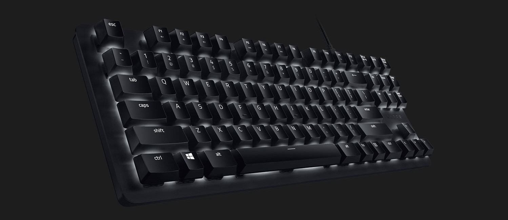
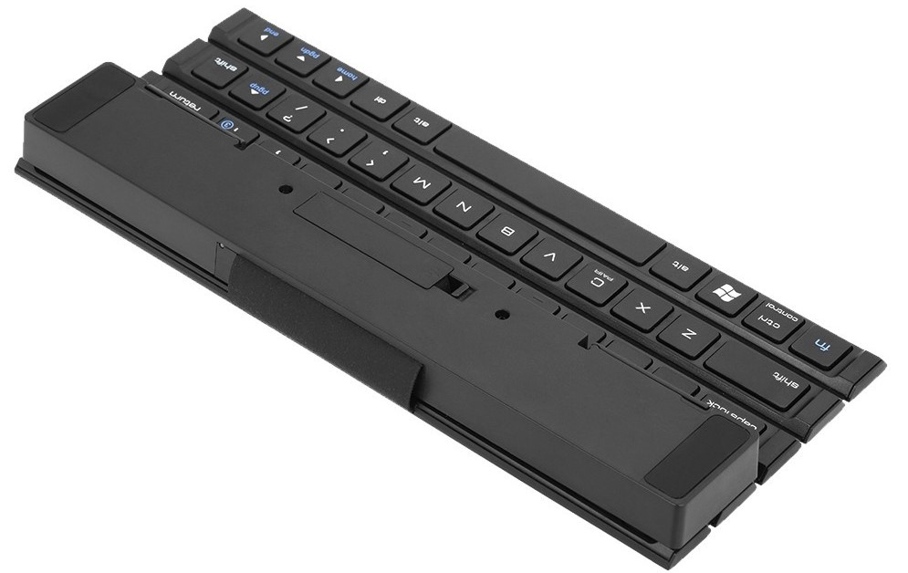
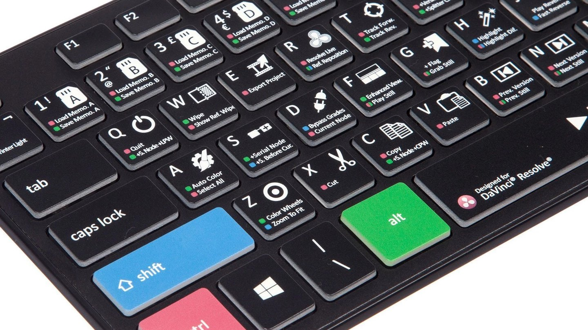
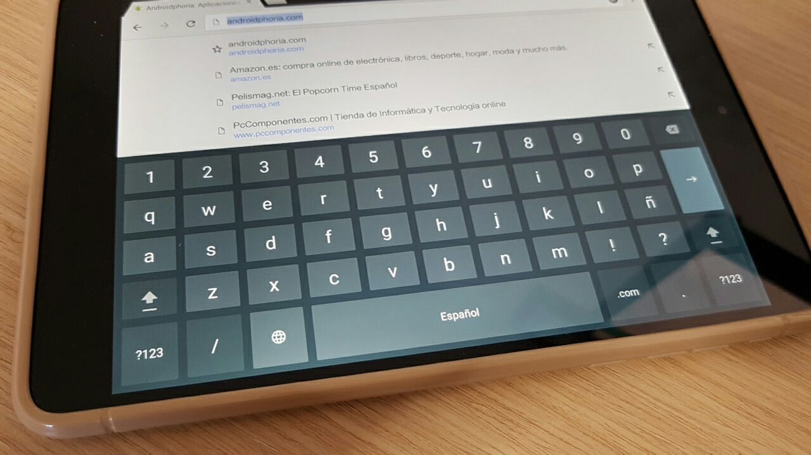

Introduction
In the world of computing there are many components, some of which form the software, and others, the hardware. On this page we will look at the history of one of the most important components created since the 17th century and one of the most important when it comes to typing, namely keyboards. The following device is used for writing in both a digital and analogue environment, i.e. keyboards were also used in old typewriters.
Curious fact
The first typewriter appeared in the 18th century. It was in 1714 that Henry Mill registered the first patent that looked like a typewriter, although nobody knew anything about it. In 1829 the printing press appeared, which was considered by people to be the first typewriter.
Types
Currently there are several types of keyboards, the most commonly used are the following:
Membrane keyboards
Of all those we are going to talk about, these keyboards are the cheapest, the most versatile and the most widely used. Membrane keyboards are keyboards that, as the name suggests, have a membrane under each key and are all connected together. There is no mechanical element on the keys and the letters rise up when pressed thanks to the rubber underneath them. These are the most common because they are the cheapest and come in the widest variety of models.

Mechanical keyboards
In this keyboard each switch has a separate mechanism to control when the switch is pressed. There are different mechanisms that address different needs and the main advantage of mechanical keyboards is their professionalism, as each mechanism is designed for what you are looking for. In general, if you buy the right keyboards, they will be faster and more durable.
Portable keyboards
Tablets have their own virtual keyboard, which is designed to be a convenient addition. For example, some are attached to the case and serve as a platform, or some are rollable, you can also wash them or get them wet without any problem and they are usually made of plastic or silicone and will not get damaged. There are also folding bags, which allow you to fold them and take up very little space.
Keyboards for video editing
There are special keyboards for video editors, although this is just one of many dedicated keyboards on the market. It's not just for professionals, and there are €100 or €150 options available from Amazon.
Digital keyboards
The mobile keyboard has become one of the most used devices in everyday life to send endless messages on WhatsApp. They are keyboards similar to physical keyboards where you have to touch each key one by one with the help of a programme that autocompletes the words, saving you time when typing.
Functionality
Every time you press or release a key on the PC, the hardware interrupt occurs, with vector 9. There are two software modules responsible for keyboard input, one of them is responsible for reading locks, converting them into ASCII and saving them in a memory buffer; the other one is responsible for checking the buffer and returning its status whenever the user requires it. In addition to this internal memory, the keyboard has some registers, two of them are accessible from the outside:
Status Log : Contains information about the interface.
Data Log : If there are keystrokes recorded in the internal memory of the keypad, a copy of the scancode corresponding to the first keystroke is stored in this log.
Both routines are implemented in the BIOS of computers, the first one operating through the hardware interfaces created by the keyboard interface (INT 9). The second is called by user programs by executing the int 16h software interrupt.
This well-detailed video explains how a keyboard works:
Brands
Where can I find them?


Personal opinion
Technologies continue to advance today, and it is impressive what they can do, but we must not forget how we got there, and I think that the keyboard is one of the devices that have helped us the most in this journey, so much so that we continue to use them. At least, that's the way it will be, until text-to-speech is perfected.
Bibliography
The links used on this page are: AZ adsl zone Wikipedia DeepL